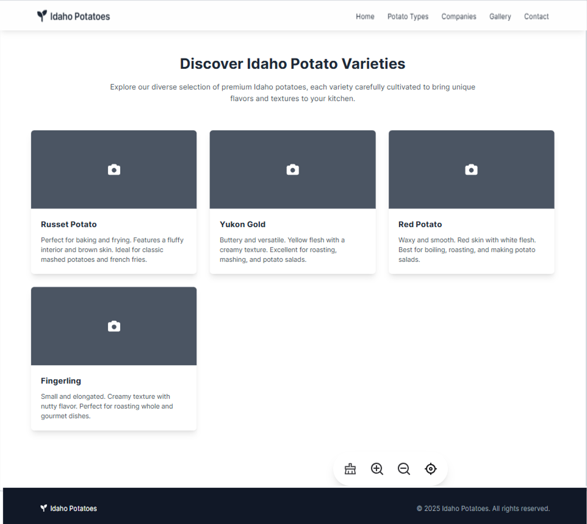
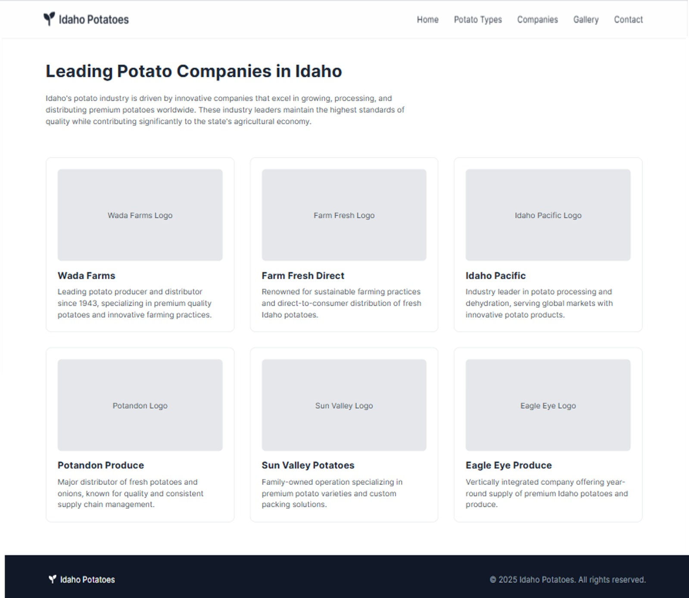
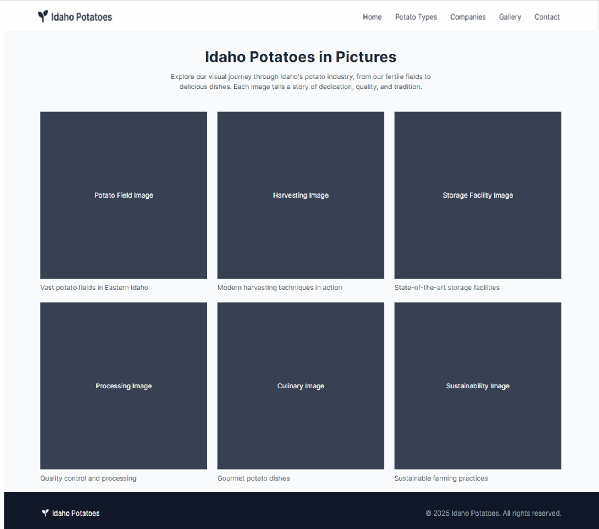
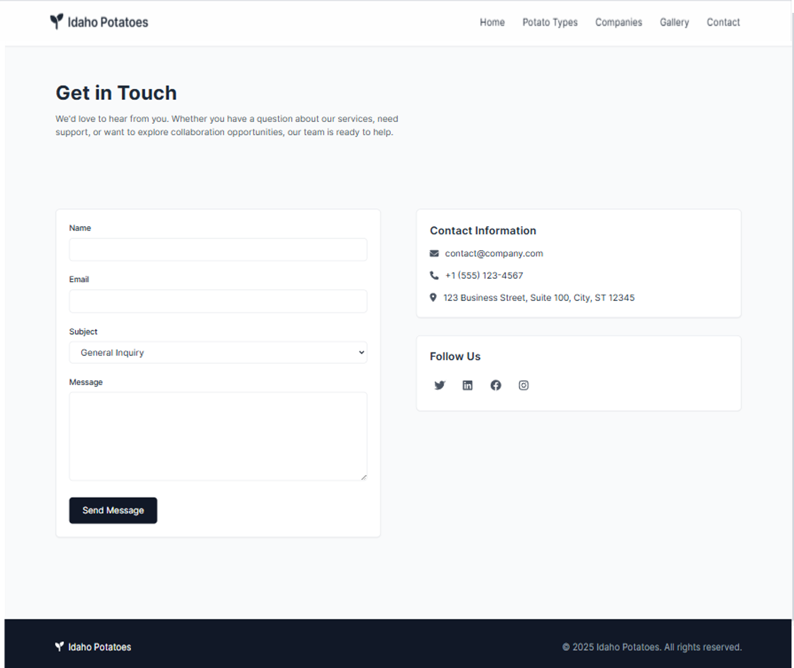

Site Name
Idaho Potatoes
This name represents the website’s focus on showcasing Idaho's renowned potatoes.
Site Purpose
The Idaho Potatoes website educates visitors about potato types, farming practices, top companies, and more, fostering appreciation for Idaho’s agricultural heritage.
Scenarios
- Which potato type is best for frying?
- Where can I contact Idaho's top potato companies?
Color Schema
Primary Color: #2a7b47 (used for headers, buttons, navigation bar background)
Secondary Color: #d3b88c (used for accents, buttons, and hover effects)
Typography
- Outfit: Used for all headings and navigation menus for a modern, clean look.
- Poppins: Used for body text to ensure high readability and professionalism.
Wireframe
Mobile View
Desktop Views
   Testing
Validation performed using:
- W3C HTML Validator for markup validation.
- Lighthouse Accessibility, SEO, and Performance tools for optimization.
- WCAG Color Contrast tools to ensure accessibility compliance.